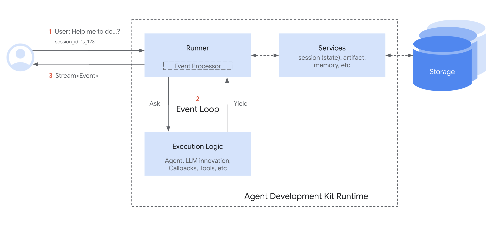

런타임 (Runtime)¶
런타임이란 무엇인가요?¶
ADK 런타임은 사용자 상호작용 중에 에이전트 애플리케이션을 구동하는 기본 엔진입니다. 정의된 에이전트, 도구, 콜백을 가져와 사용자 입력에 응답하여 실행을 조율하고, 정보 흐름, 상태 변경, LLM이나 스토리지와 같은 외부 서비스와의 상호작용을 관리하는 시스템입니다.
런타임을 여러분의 에이전트 애플리케이션의 "엔진"으로 생각하세요. 여러분이 부품(에이전트, 도구)을 정의하면, 런타임은 사용자 요청을 이행하기 위해 이들이 어떻게 연결되고 함께 실행되는지를 처리합니다.
핵심 아이디어: 이벤트 루프 (Event Loop)¶
핵심적으로 ADK 런타임은 이벤트 루프에서 작동합니다. 이 루프는 Runner 구성 요소와 정의된 "실행 로직"(에이전트, 에이전트가 만드는 LLM 호출, 콜백, 도구 포함) 간의 양방향 통신을 용이하게 합니다.

간단히 말해서:
Runner는 사용자 쿼리를 받고 메인Agent에게 처리를 시작하도록 요청합니다.Agent(및 관련 로직)는 보고할 내용(응답, 도구 사용 요청 또는 상태 변경 등)이 있을 때까지 실행된 다음,Event를 생성(yield)하거나 방출(emit)합니다.Runner는 이Event를 받고, 관련된 작업(예:Services를 통한 상태 변경 저장)을 처리한 다음, 이벤트를 전달합니다 (예: 사용자 인터페이스로).Runner가 이벤트를 처리한 후에만Agent의 로직이 일시 중지된 지점부터 재개되며, 이제 잠재적으로 Runner가 커밋한 변경 사항의 효과를 볼 수 있습니다.- 이 주기는 현재 사용자 쿼리에 대해 에이전트가 더 이상 생성할 이벤트가 없을 때까지 반복됩니다.
이 이벤트 중심 루프는 ADK가 여러분의 에이전트 코드를 실행하는 기본 패턴입니다.
심장 박동: 이벤트 루프 - 내부 작동¶
이벤트 루프는 Runner와 여러분의 사용자 정의 코드(에이전트, 도구, 콜백, 통칭하여 "실행 로직" 또는 디자인 문서의 "로직 구성 요소") 간의 상호작용을 정의하는 핵심 운영 패턴입니다. 이는 명확한 책임 분담을 설정합니다:
Note
특정 메서드 이름과 매개변수 이름은 SDK 언어에 따라 약간 다를 수 있습니다(예: Java의 agent_to_run.runAsync(...), Python의 agent_to_run.run_async(...)). 자세한 내용은 언어별 API 문서를 참조하세요.
Runner의 역할 (조정자)¶
Runner는 단일 사용자 호출의 중앙 조정자 역할을 합니다. 루프에서의 책임은 다음과 같습니다:
- 시작: 최종 사용자의 쿼리(
new_message)를 받고 일반적으로SessionService를 통해 세션 기록에 추가합니다. - 시작: 메인 에이전트의 실행 메서드(예:
agent_to_run.run_async(...))를 호출하여 이벤트 생성 프로세스를 시작합니다. - 수신 및 처리: 에이전트 로직이
Event를yield하거나emit할 때까지 기다립니다. 이벤트를 받으면 Runner는 신속하게 처리합니다. 여기에는 다음이 포함됩니다:- 구성된
Services(SessionService,ArtifactService,MemoryService)를 사용하여event.actions(예:state_delta,artifact_delta)에 표시된 변경 사항을 커밋합니다. - 다른 내부 장부 기록을 수행합니다.
- 구성된
- 상위로 전달: 처리된 이벤트를 상위로 전달합니다 (예: 호출하는 애플리케이션이나 UI 렌더링을 위해).
- 반복: 에이전트 로직에 생성된 이벤트에 대한 처리가 완료되었음을 알리고, 다음 이벤트를 생성하도록 재개할 수 있게 합니다.
개념적 Runner 루프:
# Runner의 메인 루프 로직 간소화 보기
def run(new_query, ...) -> Generator[Event]:
# 1. new_query를 세션 이벤트 기록에 추가 (SessionService를 통해)
session_service.append_event(session, Event(author='user', content=new_query))
# 2. 에이전트를 호출하여 이벤트 루프 시작
agent_event_generator = agent_to_run.run_async(context)
async for event in agent_event_generator:
# 3. 생성된 이벤트를 처리하고 변경 사항 커밋
session_service.append_event(session, event) # state/artifact 델타 등 커밋
# memory_service.update_memory(...) # 해당되는 경우
# artifact_service는 에이전트 실행 중 컨텍스트를 통해 이미 호출되었을 수 있음
# 4. 상위 처리를 위해 이벤트 생성 (예: UI 렌더링)
yield event
# Runner는 에이전트 생성기가 생성 후 계속할 수 있음을 암묵적으로 신호함
// Java에서 Runner의 메인 루프 로직 간소화 개념 보기
public Flowable<Event> runConceptual(
Session session,
InvocationContext invocationContext,
Content newQuery
) {
// 1. new_query를 세션 이벤트 기록에 추가 (SessionService를 통해)
// ...
sessionService.appendEvent(session, userEvent).blockingGet();
// 2. 에이전트를 호출하여 이벤트 스트림 시작
Flowable<Event> agentEventStream = agentToRun.runAsync(invocationContext);
// 3. 각 생성된 이벤트를 처리하고, 변경 사항을 커밋하고, "yield" 또는 "emit"
return agentEventStream.map(event -> {
// 이것은 세션 객체를 변경합니다 (이벤트를 추가하고, stateDelta를 적용).
// appendEvent의 반환 값(Single<Event>)은 개념적으로
// 처리 후의 이벤트 자체입니다.
sessionService.appendEvent(session, event).blockingGet(); // 간소화된 블로킹 호출
// memory_service.update_memory(...) // 해당되는 경우 - 개념적
// artifact_service는 에이전트 실행 중 컨텍스트를 통해 이미 호출되었을 수 있음
// 4. 상위 처리를 위해 이벤트 "생성"
// RxJava에서 map에서 이벤트를 반환하는 것은 효과적으로 다음 연산자나 구독자에게 전달하는 것과 같습니다.
return event;
});
}
실행 로직의 역할 (에이전트, 도구, 콜백)¶
에이전트, 도구, 콜백 내의 코드는 실제 계산과 의사 결정을 담당합니다. 루프와의 상호작용은 다음을 포함합니다:
- 실행: 현재
InvocationContext(실행이 재개될 때의 세션 상태 포함)를 기반으로 로직을 실행합니다. - 생성: 로직이 통신(메시지 전송, 도구 호출, 상태 변경 보고)해야 할 때, 관련 내용과 작업을 포함하는
Event를 구성한 다음, 이 이벤트를Runner에 다시yield합니다. - 일시 중지: 결정적으로, 에이전트 로직의 실행은
yield문(또는 RxJava의return) 직후에 즉시 일시 중지됩니다.Runner가 3단계(처리 및 커밋)를 완료할 때까지 기다립니다. - 재개:
Runner가 생성된 이벤트를 처리한 후에만 에이전트 로직이yield바로 다음 문장에서 실행을 재개합니다. - 업데이트된 상태 보기: 재개 시, 에이전트 로직은 이제 이전에 생성된 이벤트에서
Runner가 커밋한 변경 사항을 반영하는 세션 상태(ctx.session.state)에 안정적으로 접근할 수 있습니다.
개념적 실행 로직:
# Agent.run_async, 콜백 또는 도구 내부 로직의 간소화된 보기
# ... 이전 코드는 현재 상태를 기반으로 실행 ...
# 1. 변경 또는 출력이 필요하다고 판단하고, 이벤트 구성
# 예시: 상태 업데이트
update_data = {'field_1': 'value_2'}
event_with_state_change = Event(
author=self.name,
actions=EventActions(state_delta=update_data),
content=types.Content(parts=[types.Part(text="상태가 업데이트되었습니다.")])
# ... 다른 이벤트 필드 ...
)
# 2. 처리 및 커밋을 위해 Runner에 이벤트 생성
yield event_with_state_change
# <<<<<<<<<<<< 실행이 여기서 일시 중지됩니다 >>>>>>>>>>>>
# <<<<<<<<<<<< RUNNER가 이벤트를 처리하고 커밋합니다 >>>>>>>>>>>>
# 3. Runner가 위 이벤트를 처리한 후에만 실행 재개.
# 이제 Runner가 커밋한 상태가 안정적으로 반영됩니다.
# 후속 코드는 생성된 이벤트의 변경 사항이 발생했다고 안전하게 가정할 수 있습니다.
val = ctx.session.state['field_1']
# 여기서 `val`은 "value_2"임이 보장됩니다 (Runner가 성공적으로 커밋했다고 가정)
print(f"실행 재개됨. field_1의 값은 이제: {val}")
# ... 후속 코드 계속 ...
# 나중에 다른 이벤트를 생성할 수 있음...
// Agent.runAsync, 콜백 또는 도구 내부 로직의 간소화된 보기
// ... 이전 코드는 현재 상태를 기반으로 실행 ...
// 1. 변경 또는 출력이 필요하다고 판단하고, 이벤트 구성
// 예시: 상태 업데이트
ConcurrentMap<String, Object> updateData = new ConcurrentHashMap<>();
updateData.put("field_1", "value_2");
EventActions actions = EventActions.builder().stateDelta(updateData).build();
Content eventContent = Content.builder().parts(Part.fromText("상태가 업데이트되었습니다.")).build();
Event eventWithStateChange = Event.builder()
.author(self.name())
.actions(actions)
.content(Optional.of(eventContent))
// ... 다른 이벤트 필드 ...
.build();
// 2. 이벤트 "생성". RxJava에서는 스트림으로 방출하는 것을 의미합니다.
// Runner(또는 상위 소비자)는 이 Flowable을 구독합니다.
// Runner가 이 이벤트를 받으면 처리합니다(예: sessionService.appendEvent 호출).
// Java ADK의 'appendEvent'는 'ctx'(InvocationContext) 내에 있는 'Session' 객체를 변경합니다.
// <<<<<<<<<<<< 개념적 일시 중지 지점 >>>>>>>>>>>>
// RxJava에서는 'eventWithStateChange'의 방출이 발생하고, 그 다음 스트림은
// Runner가 이 이벤트를 처리한 *후*의 로직을 나타내는 'flatMap' 또는 'concatMap' 연산자로 계속될 수 있습니다.
// "Runner가 처리를 마친 후에만 실행 재개"를 모델링하기 위해:
// Runner의 `appendEvent`는 보통 비동기 작업 자체입니다 (Single<Event> 반환).
// 에이전트의 흐름은 커밋된 상태에 의존하는 후속 로직이
// 해당 `appendEvent`가 완료된 *후에* 실행되도록 구조화되어야 합니다.
// Runner가 일반적으로 이를 조율하는 방법은 다음과 같습니다:
// Runner:
// agent.runAsync(ctx)
// .concatMapEager(eventFromAgent ->
// sessionService.appendEvent(ctx.session(), eventFromAgent) // 이는 ctx.session().state()를 업데이트합니다
// .toFlowable() // 처리된 후 이벤트를 방출
// )
// .subscribe(processedEvent -> { /* UI가 processedEvent를 렌더링 */ });
// 따라서 에이전트 자체 로직 내에서, 생성한 이벤트가
// 처리되고 상태 변경 사항이 ctx.session().state()에 반영된 *후에* 무언가를 해야 하는 경우,
// 그 후속 로직은 일반적으로 반응형 체인의 다른 단계에 있게 됩니다.
// 이 개념적 예제를 위해, 이벤트를 방출한 다음 "재개"를
// Flowable 체인의 후속 작업으로 시뮬레이션합니다.
return Flowable.just(eventWithStateChange) // 2단계: 이벤트 생성
.concatMap(yieldedEvent -> {
// <<<<<<<<<<<< RUNNER가 개념적으로 이벤트를 처리하고 커밋합니다 >>>>>>>>>>>>
// 이 시점에서 실제 러너에서는 ctx.session().appendEvent(yieldedEvent)가 호출되었을 것이고
// ctx.session().state()가 업데이트되었을 것입니다.
// 우리가 이것을 모델링하려는 에이전트의 개념적 로직 *내부*에 있으므로,
// Runner의 작업이 암묵적으로 우리의 'ctx.session()'을 업데이트했다고 가정합니다.
// 3. 실행 재개.
// 이제 Runner가 커밋한 상태(sessionService.appendEvent를 통해)가
// ctx.session().state()에 안정적으로 반영됩니다.
Object val = ctx.session().state().get("field_1");
// 여기서 `val`은 "value_2"임이 보장됩니다. 왜냐하면 Runner가 호출한 `sessionService.appendEvent`가
// `ctx` 객체 내의 세션 상태를 업데이트했을 것이기 때문입니다.
System.out.println("실행 재개됨. field_1의 값은 이제: " + val);
// ... 후속 코드 계속 ...
// 이 후속 코드가 다른 이벤트를 생성해야 한다면, 여기서 그렇게 할 것입니다.
Runner와 실행 로직 간의 이 협력적인 생성/일시 중지/재개 주기는 Event 객체를 통해 매개되며 ADK 런타임의 핵심을 형성합니다.
런타임의 핵심 구성 요소¶
ADK 런타임 내에서 여러 구성 요소가 함께 작동하여 에이전트 호출을 실행합니다. 이들의 역할을 이해하면 이벤트 루프가 어떻게 작동하는지 명확해집니다:
-
Runner¶- 역할: 단일 사용자 쿼리(
run_async)의 주 진입점이자 조정자입니다. - 기능: 전체 이벤트 루프를 관리하고, 실행 로직에서 생성된 이벤트를 수신하며, 이벤트 작업(상태/아티팩트 변경)을 처리하고 커밋하기 위해 서비스와 협력하고, 처리된 이벤트를 상위(예: UI)로 전달합니다. 본질적으로 생성된 이벤트를 기반으로 대화를 턴 단위로 진행시킵니다. (
google.adk.runners.runner에 정의됨).
- 역할: 단일 사용자 쿼리(
-
실행 로직 구성 요소¶
- 역할: 사용자 정의 코드와 핵심 에이전트 기능을 포함하는 부분입니다.
- 구성 요소:
Agent(BaseAgent,LlmAgent등): 정보를 처리하고 조치를 결정하는 기본 로직 단위입니다. 이벤트를 생성하는_run_async_impl메서드를 구현합니다.Tools(BaseTool,FunctionTool,AgentTool등): 에이전트(종종LlmAgent)가 외부 세계와 상호 작용하거나 특정 작업을 수행하는 데 사용하는 외부 함수 또는 기능입니다. 실행되고 결과를 반환하며, 이는 이벤트로 래핑됩니다.Callbacks(함수): 에이전트에 연결된 사용자 정의 함수(예:before_agent_callback,after_model_callback)로, 실행 흐름의 특정 지점에 연결되어 잠재적으로 동작이나 상태를 수정하며, 그 효과는 이벤트에 캡처됩니다.- 기능: 실제 생각, 계산 또는 외부 상호 작용을 수행합니다.
Event객체를 생성하고 Runner가 처리할 때까지 일시 중지하여 결과를 전달하거나 필요 사항을 전달합니다.
-
Event¶- 역할:
Runner와 실행 로직 간에 주고받는 메시지입니다. - 기능: 원자적 발생(사용자 입력, 에이전트 텍스트, 도구 호출/결과, 상태 변경 요청, 제어 신호)을 나타냅니다. 발생 내용과 의도된 부작용(
state_delta와 같은actions)을 모두 전달합니다.
- 역할:
-
Services¶- 역할: 영구 또는 공유 리소스 관리를 담당하는 백엔드 구성 요소입니다. 주로 이벤트 처리 중에
Runner가 사용합니다. - 구성 요소:
SessionService(BaseSessionService,InMemorySessionService등):Session객체를 관리하며, 저장/로드,state_delta를 세션 상태에 적용, 이벤트 기록에 이벤트 추가를 포함합니다.ArtifactService(BaseArtifactService,InMemoryArtifactService,GcsArtifactService등): 바이너리 아티팩트 데이터의 저장 및 검색을 관리합니다.save_artifact는 실행 로직 중 컨텍스트를 통해 호출되지만, 이벤트의artifact_delta는 Runner/SessionService에 대한 작업을 확인합니다.MemoryService(BaseMemoryService등): (선택 사항) 사용자의 세션 간 장기 의미 기억을 관리합니다.- 기능: 지속성 계층을 제공합니다.
Runner는event.actions에 의해 신호된 변경 사항이 실행 로직이 재개되기 전에 안정적으로 저장되도록 보장하기 위해 이들과 상호 작용합니다.
- 역할: 영구 또는 공유 리소스 관리를 담당하는 백엔드 구성 요소입니다. 주로 이벤트 처리 중에
-
Session¶- 역할: 사용자와 애플리케이션 간의 하나의 특정 대화에 대한 상태와 기록을 담고 있는 데이터 컨테이너입니다.
- 기능: 현재
state사전, 모든 과거events목록(event history), 관련 아티팩트에 대한 참조를 저장합니다. 이는SessionService가 관리하는 상호 작용의 주요 기록입니다.
-
Invocation¶- 역할:
Runner가 수신한 순간부터 해당 쿼리에 대해 에이전트 로직이 이벤트 생성을 마칠 때까지 단일 사용자 쿼리에 응답하여 발생하는 모든 것을 나타내는 개념적 용어입니다. - 기능: 호출에는 여러 에이전트 실행(에이전트 전송 또는
AgentTool사용 시), 여러 LLM 호출, 도구 실행, 콜백 실행이 포함될 수 있으며, 이 모든 것이InvocationContext내의 단일invocation_id로 연결됩니다.
- 역할:
이러한 플레이어들은 이벤트 루프를 통해 지속적으로 상호 작용하여 사용자 요청을 처리합니다.
작동 방식: 간소화된 호출¶
LLM 에이전트가 도구를 호출하는 일반적인 사용자 쿼리에 대한 간소화된 흐름을 추적해 보겠습니다:

단계별 분석¶
- 사용자 입력: 사용자가 쿼리를 보냅니다(예: "프랑스의 수도는 어디인가요?").
- Runner 시작:
Runner.run_async가 시작됩니다.SessionService와 상호 작용하여 관련Session을 로드하고 사용자 쿼리를 첫 번째Event로 세션 기록에 추가합니다.InvocationContext(ctx)가 준비됩니다. - 에이전트 실행:
Runner는 지정된 루트 에이전트(예:LlmAgent)에서agent.run_async(ctx)를 호출합니다. - LLM 호출 (예시):
Agent_Llm은 정보가 필요하다고 판단하고, 아마도 도구를 호출하여 이를 수행합니다.LLM에 대한 요청을 준비합니다. LLM이MyTool을 호출하기로 결정했다고 가정해 보겠습니다. - FunctionCall 이벤트 생성:
Agent_Llm은 LLM에서FunctionCall응답을 받고, 이를Event(author='Agent_Llm', content=Content(parts=[Part(function_call=...)]))에 래핑한 다음, 이 이벤트를yield하거나emit합니다. - 에이전트 일시 중지:
Agent_Llm의 실행은yield직후 즉시 일시 중지됩니다. - Runner 처리:
Runner는 FunctionCall 이벤트를 받습니다. 기록에 기록하기 위해SessionService에 전달합니다.Runner는 이벤트를User(또는 애플리케이션)에게 상위로 전달합니다. - 에이전트 재개:
Runner는 이벤트가 처리되었음을 알리고,Agent_Llm은 실행을 재개합니다. - 도구 실행:
Agent_Llm의 내부 흐름은 이제 요청된MyTool을 실행하기 위해 진행됩니다.tool.run_async(...)를 호출합니다. - 도구가 결과 반환:
MyTool이 실행되고 결과를 반환합니다(예:{'result': 'Paris'}). - FunctionResponse 이벤트 생성: 에이전트(
Agent_Llm)는 도구 결과를FunctionResponse파트를 포함하는Event로 래핑합니다(예:Event(author='Agent_Llm', content=Content(role='user', parts=[Part(function_response=...)]))). 이 이벤트는 도구가 상태를 수정(state_delta)하거나 아티팩트를 저장(artifact_delta)한 경우actions를 포함할 수도 있습니다. 에이전트는 이 이벤트를yield합니다. - 에이전트 일시 중지:
Agent_Llm이 다시 일시 중지됩니다. - Runner 처리:
Runner는 FunctionResponse 이벤트를 받습니다.SessionService에 전달하여state_delta/artifact_delta를 적용하고 이벤트를 기록에 추가합니다.Runner는 이벤트를 상위로 전달합니다. - 에이전트 재개:
Agent_Llm은 이제 도구 결과와 모든 상태 변경이 커밋되었음을 알고 재개됩니다. - 최종 LLM 호출 (예시):
Agent_Llm은 자연어 응답을 생성하기 위해 도구 결과를LLM에 다시 보냅니다. - 최종 텍스트 이벤트 생성:
Agent_Llm은LLM에서 최종 텍스트를 받고, 이를Event(author='Agent_Llm', content=Content(parts=[Part(text=...)]))에 래핑한 다음,yield합니다. - 에이전트 일시 중지:
Agent_Llm이 일시 중지됩니다. - Runner 처리:
Runner는 최종 텍스트 이벤트를 받고, 기록을 위해SessionService에 전달하고,User에게 상위로 전달합니다. 이것은is_final_response()로 표시될 가능성이 높습니다. - 에이전트 재개 및 완료:
Agent_Llm이 재개됩니다. 이 호출에 대한 작업을 완료했으므로run_async생성기가 완료됩니다. - Runner 완료:
Runner는 에이전트의 생성기가 소진된 것을 보고 이 호출에 대한 루프를 완료합니다.
이 생성/일시 중지/처리/재개 주기는 상태 변경이 일관되게 적용되고 실행 로직이 항상 이벤트를 생성한 후 가장 최근에 커밋된 상태에서 작동하도록 보장합니다.
중요한 런타임 동작¶
ADK 런타임이 상태, 스트리밍, 비동기 작업을 처리하는 방식에 대한 몇 가지 주요 측면을 이해하는 것은 예측 가능하고 효율적인 에이전트를 구축하는 데 매우 중요합니다.
상태 업데이트 및 커밋 시점¶
-
규칙: 코드(에이전트, 도구 또는 콜백 내)가 세션 상태를 수정할 때(예:
context.state['my_key'] = 'new_value'), 이 변경 사항은 처음에는 현재InvocationContext내에 로컬로 기록됩니다. 이 변경 사항은 해당state_delta를actions에 포함하는Event가 코드에 의해yield되고Runner에 의해 처리된 후에만 지속성이 보장됩니다(SessionService에 의해 저장됨). -
함의:
yield에서 재개된 후에 실행되는 코드는 생성된 이벤트에서 신호된 상태 변경이 커밋되었다고 안정적으로 가정할 수 있습니다.
# 에이전트 로직 내부 (개념적)
# 1. 상태 수정
ctx.session.state['status'] = 'processing'
event1 = Event(..., actions=EventActions(state_delta={'status': 'processing'}))
# 2. 델타와 함께 이벤트 생성
yield event1
# --- 일시 중지 --- Runner가 event1을 처리하고, SessionService가 'status' = 'processing'을 커밋 ---
# 3. 실행 재개
# 이제 커밋된 상태에 의존하는 것이 안전함
current_status = ctx.session.state['status'] # 'processing'임이 보장됨
print(f"재개 후 상태: {current_status}")
// 에이전트 로직 내부 (개념적)
// ... 이전 코드는 현재 상태를 기반으로 실행 ...
// 1. 상태 수정 준비 및 이벤트 구성
ConcurrentHashMap<String, Object> stateChanges = new ConcurrentHashMap<>();
stateChanges.put("status", "processing");
EventActions actions = EventActions.builder().stateDelta(stateChanges).build();
Content content = Content.builder().parts(Part.fromText("상태 업데이트: 처리 중")).build();
Event event1 = Event.builder()
.actions(actions)
// ...
.build();
// 2. 델타와 함께 이벤트 생성
return Flowable.just(event1)
.map(
emittedEvent -> {
// --- 개념적 일시 중지 및 RUNNER 처리 ---
// 3. 실행 재개 (개념적으로)
// 이제 커밋된 상태에 의존하는 것이 안전함.
String currentStatus = (String) ctx.session().state().get("status");
System.out.println("재개 후 상태 (에이전트 로직 내부): " + currentStatus); // 'processing'임이 보장됨
// 이벤트 자체(event1)가 전달됨.
// 이 에이전트 단계 내의 후속 로직이 *다른* 이벤트를 생성했다면,
// concatMap을 사용하여 해당 새 이벤트를 방출할 것임.
return emittedEvent;
});
// ... 후속 에이전트 로직은 이제 업데이트된 `ctx.session().state()`를 기반으로
// 추가적인 반응형 연산자를 포함하거나 더 많은 이벤트를 방출할 수 있음.
세션 상태의 "더티 리드"¶
- 정의: 커밋은
yield후에 발생하지만, 동일한 호출 내에서 나중에 실행되지만 상태 변경 이벤트가 실제로 생성되고 처리되기 전에 실행되는 코드는 종종 로컬의 커밋되지 않은 변경 사항을 볼 수 있습니다. 이를 때때로 "더티 리드(dirty read)"라고 합니다. - 예시:
# before_agent_callback 내 코드
callback_context.state['field_1'] = 'value_1'
# 상태는 로컬에서 'value_1'로 설정되지만, 아직 Runner에 의해 커밋되지 않음
# ... 에이전트 실행 ...
# *동일한 호출 내에서* 나중에 호출되는 도구 내 코드
# 읽기 가능 (더티 리드), 하지만 'value_1'은 아직 영구적이라고 보장할 수 없음.
val = tool_context.state['field_1'] # 'val'은 여기서 'value_1'일 가능성이 높음
print(f"도구의 더티 리드 값: {val}")
# state_delta={'field_1': 'value_1'}를 포함하는 이벤트가
# 이 도구가 실행된 *후에* 생성되고 Runner에 의해 처리된다고 가정.
// 상태 수정 - BeforeAgentCallback 내 코드
// 그리고 이 변경 사항을 callbackContext.eventActions().stateDelta()에 준비시킵니다.
callbackContext.state().put("field_1", "value_1");
// --- 에이전트 실행 ... ---
// --- *동일한 호출 내에서* 나중에 호출되는 도구 내 코드 ---
// 읽기 가능 (더티 리드), 하지만 'value_1'은 아직 영구적이라고 보장할 수 없음.
Object val = toolContext.state().get("field_1"); // 'val'은 여기서 'value_1'일 가능성이 높음
System.out.println("도구의 더티 리드 값: " + val);
// state_delta={'field_1': 'value_1'}를 포함하는 이벤트가
// 이 도구가 실행된 *후에* 생성되고 Runner에 의해 처리된다고 가정.
- 함의:
- 장점: 단일 복잡한 단계 내의 다른 로직 부분(예: 다음 LLM 턴 전의 여러 콜백 또는 도구 호출)이 전체 생성/커밋 주기를 기다리지 않고 상태를 사용하여 조정할 수 있습니다.
- 주의사항: 중요한 로직에 대해 더티 리드에 크게 의존하는 것은 위험할 수 있습니다.
state_delta를 포함하는 이벤트가 생성되고Runner에 의해 처리되기 전에 호출이 실패하면, 커밋되지 않은 상태 변경은 손실됩니다. 중요한 상태 전환의 경우, 성공적으로 처리되는 이벤트와 연결되도록 보장하세요.
스트리밍 대 비스트리밍 출력 (partial=True)¶
이는 주로 LLM의 응답이 처리되는 방식과 관련이 있으며, 특히 스트리밍 생성 API를 사용할 때 그렇습니다.
- 스트리밍: LLM은 응답을 토큰 단위 또는 작은 덩어리로 생성합니다.
- 프레임워크(
BaseLlmFlow내에서 종종)는 단일 개념적 응답에 대해 여러Event객체를 생성합니다. 이러한 이벤트의 대부분은partial=True를 가집니다. Runner는partial=True인 이벤트를 받으면 일반적으로 상위(UI 표시용)로 즉시 전달하지만,state_delta와 같은actions처리는 건너뜁니다.- 결국 프레임워크는 해당 응답에 대해 비-부분(
partial=False또는turn_complete=True를 통해 암묵적으로)으로 표시된 최종 이벤트를 생성합니다. Runner는 이 최종 이벤트만 완전히 처리하여 관련된state_delta또는artifact_delta를 커밋합니다.- 비스트리밍: LLM은 전체 응답을 한 번에 생성합니다. 프레임워크는 비-부분으로 표시된 단일 이벤트를 생성하며,
Runner는 이를 완전히 처리합니다. - 중요한 이유: UI가 생성되는 대로 텍스트를 점진적으로 표시할 수 있도록 하면서, 상태 변경이 LLM의 완전한 응답을 기반으로 원자적으로 그리고 한 번만 적용되도록 보장합니다.
비동기가 기본 (run_async)¶
- 핵심 설계: ADK 런타임은 동시 작업(LLM 응답 또는 도구 실행 대기 등)을 차단 없이 효율적으로 처리하기 위해 기본적으로 비동기 라이브러리(Python의
asyncio및 Java의RxJava등) 위에 구축되었습니다. - 주 진입점:
Runner.run_async는 에이전트 호출을 실행하는 기본 메서드입니다. 모든 핵심 실행 가능 구성 요소(에이전트, 특정 흐름)는 내부적으로비동기메서드를 사용합니다. - 동기식 편의성 (
run): 동기식Runner.run메서드는 주로 편의를 위해 존재합니다 (예: 간단한 스크립트나 테스트 환경에서). 그러나 내부적으로Runner.run은 일반적으로Runner.run_async를 호출하고 비동기 이벤트 루프 실행을 대신 관리합니다. - 개발자 경험: 최상의 성능을 위해 애플리케이션(예: ADK를 사용하는 웹 서버)을 비동기식으로 설계하는 것을 권장합니다. Python에서는
asyncio를 사용하는 것을 의미하고, Java에서는RxJava의 반응형 프로그래밍 모델을 활용합니다. - 동기 콜백/도구: ADK 프레임워크는 도구 및 콜백에 대해 비동기 및 동기 함수를 모두 지원합니다.
- 블로킹 I/O: 장기 실행 동기 I/O 작업의 경우 프레임워크는 중단을 방지하려고 시도합니다. Python ADK는 asyncio.to_thread를 사용할 수 있으며, Java ADK는 종종 블로킹 호출을 위해 적절한 RxJava 스케줄러나 래퍼에 의존합니다.
- CPU 바운드 작업: 순수하게 CPU 집약적인 동기 작업은 두 환경 모두에서 실행 스레드를 계속 차단합니다.
이러한 동작을 이해하면 더 견고한 ADK 애플리케이션을 작성하고 상태 일관성, 스트리밍 업데이트 및 비동기 실행과 관련된 문제를 디버깅하는 데 도움이 됩니다.